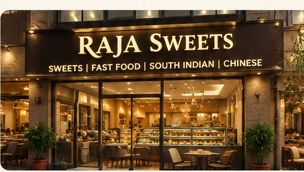

Boondi Ladoo
A classic sweet and one of Raja Sweets’ famous favourites.
TRADITIONAL TASTE • MODERN FLAVOURS
Modinagar, Uttar Pradesh
A much-loved local spot for Chhole Bhature, Boondi Ladoo, Lassi, Rabdi and fast food, with North Indian, South Indian and Chinese favourites.
ABOUT RAJA SWEETS
Located on Main Road in Dayapuri, near the iconic Modi Mandir, Raja Sweets And Fast Food brings together popular Indian sweets, hearty North Indian favourites, South Indian dishes, Chinese food and quick bites.
Known for favourites including Chhole Bhature, Boondi Ladoo, Lassi and Rabdi, the restaurant also offers fast food for quick meals and casual dining.
Discover Raja Sweets →
OUR SPECIALTIES
From classic sweets and refreshing lassi to hearty meals and fast food, there is something for every craving.
A classic sweet and one of Raja Sweets’ famous favourites.

A hearty North Indian favourite, perfect for a filling meal.
Refreshing and rich favourites to complete your meal.
Quick, flavourful choices for every mood.

Sweet treats for celebrations and everyday cravings.
COME VISIT US
Find Raja Sweets And Fast Food on Main Road, Dayapuri, near Modi Mandir in Modinagar — easy to reach and ready to welcome you.
Main Road, Dayapuri,
Near Modi Mandir, Modinagar,
Uttar Pradesh
Call: +91 70377 31096